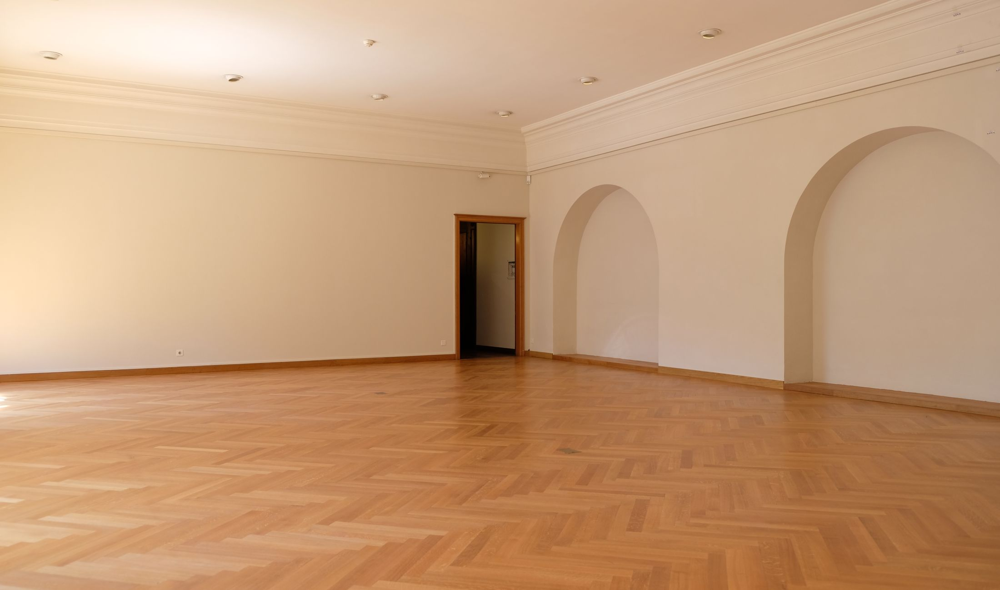
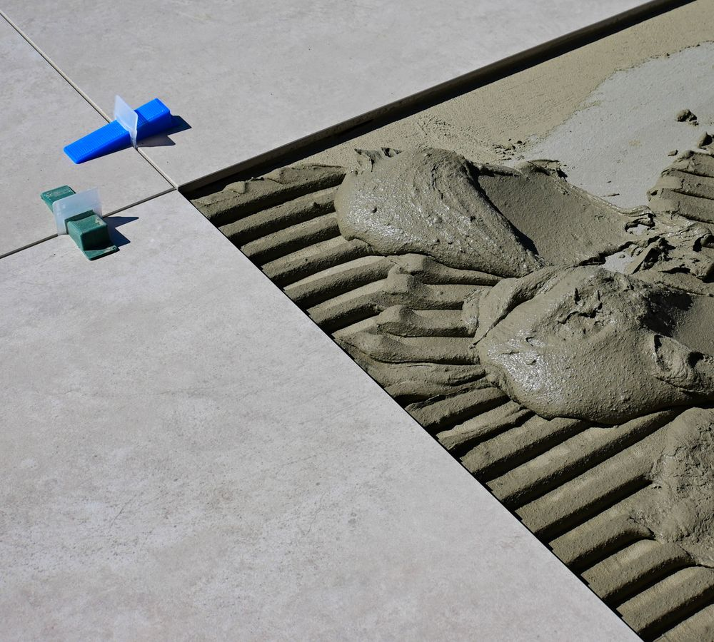
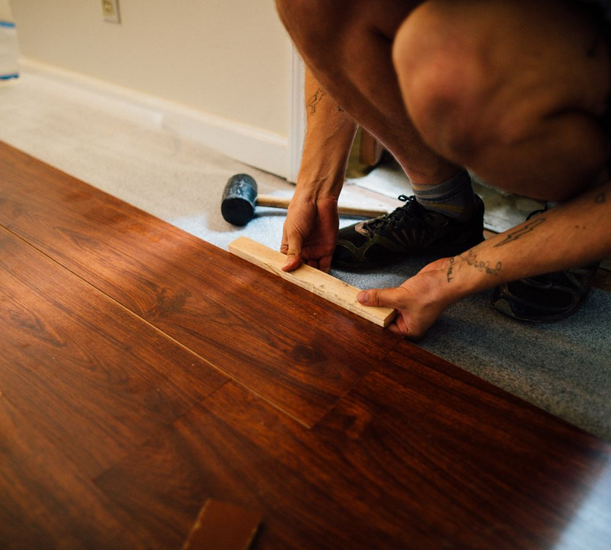
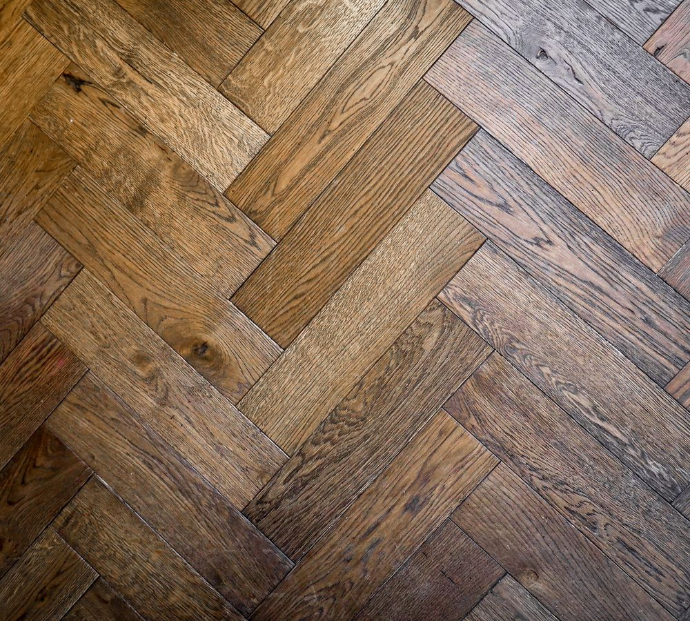
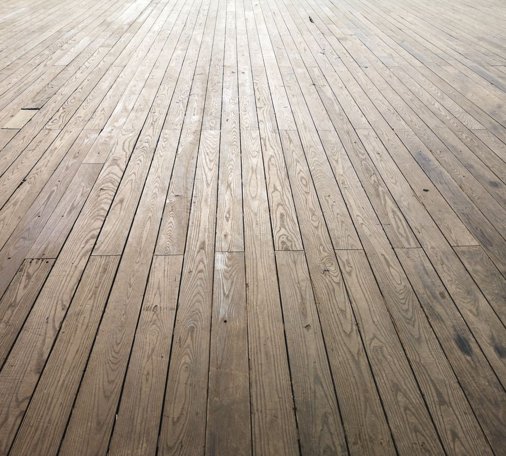
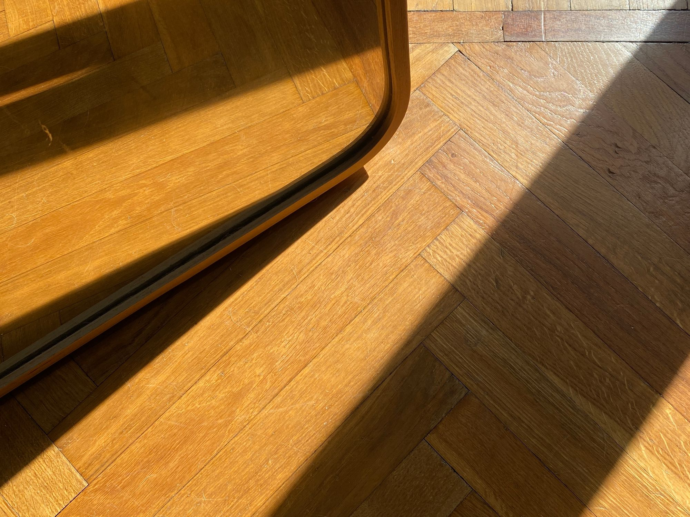
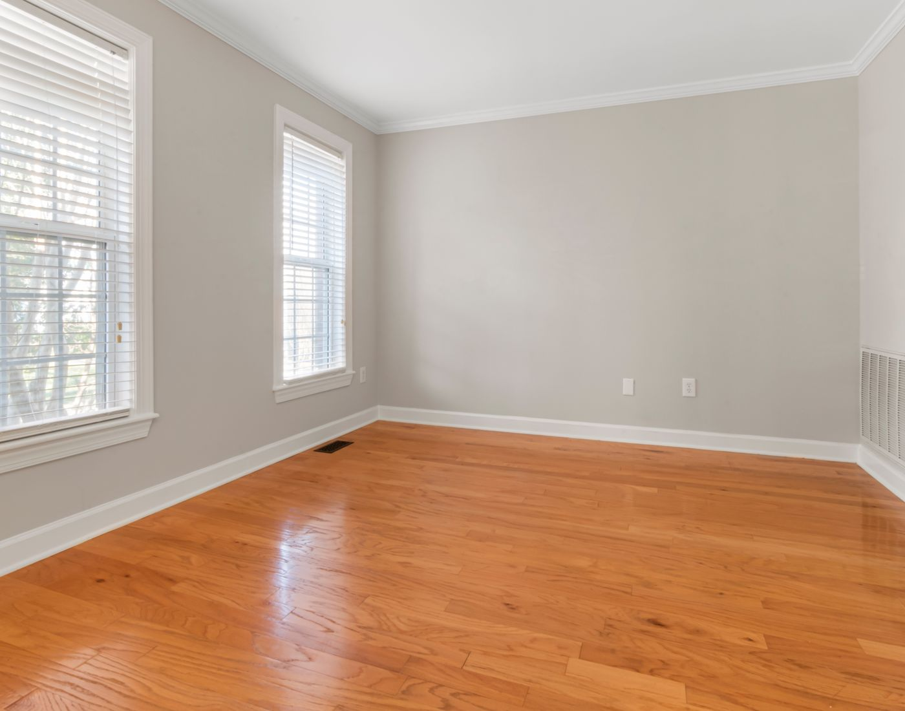

Guides · Motifs · Outils
Un parquet bien posé commence avant la première lame.
Guides, techniques et outils pour comprendre et réussir votre projet parquet — du support au motif, du calepinage à la finition.
Vous en êtes où ?
Quatre entrées, un seul chantier.
Chaque étape a ses décisions et ses pièges. Commencez par celle qui vous concerne aujourd’hui.
Je prépare mon sol
(01)Planéité, humidité, ragréage, sous-couche : ce qui se joue avant toute pose.
Explorer
Je choisis ma pose
(02)Flottante, collée, clouée : le support et le produit décident plus que le goût.
Explorer
Je choisis mon motif
(03)Droite, diagonale, Point de Hongrie, bâton rompu : six écritures au sol.
Explorer
J’ai déjà un parquet
(04)Entretien, réparation, rénovation : prolonger plutôt que remplacer.
Explorer
Visualiseur · outil
Essayez votre parquet dans votre pièce.
Importez une photo, choisissez un parquet et comparez plusieurs rendus. Le calcul se fait dans votre navigateur : votre photo n’est ni envoyée ni conservée.
Guides du moment
Ce qu’il faut savoir avant de commander.
Glissez
Défilez
01 / 06



-
01
Une flèche continue
Les lames, coupées en biais à leurs extrémités, forment une pointe qui file vers le fond de la pièce et guide le regard.
-
02
Un axe sans pardon
Tout se joue au traçage : un écart minime en début de pose se cumule et finit par se voir sur toute la longueur.
-
03
Lames gauches et droites
Elles se commandent ensemble, en quantités égales, avec une marge de chutes plus large qu’une pose droite.


Tutoriels
Passer au geste.
(01)
Poser un parquet flottant, étape par étape
Le tutoriel de référence : de la sous-couche aux plinthes, avec les points de contrôle.
(02) Coller un parquet contrecolléLa pose la plus stable et la plus silencieuse — et la moins tolérante à l'improvisation.
(03) Réussir son calepinageUne heure de traçage évite deux jours de rattrapage.
Boîte à outils
Décider, pas seulement lire.
Des outils courts, utilisables depuis un téléphone sur le chantier comme depuis un bureau au moment de trancher.
Votre projet
Décrivez votre pièce, on s’occupe des questions utiles.
- Cinq étapes courtes, aucune question inutile.
- « Je ne sais pas » est une réponse valable partout.
- Aucun démarchage : vos coordonnées servent uniquement à répondre.

Dossier
Le sens de pose, de A à Z.
(01)
Quel sens de pose choisir pour son parquet ?
Cinq critères suffisent à trancher, et ils ne se valent pas. Voici l'ordre dans lequel les regarder.
(02) Poser un parquet dans le sens de la lumièreLa règle la plus citée du parquet. Encore faut-il savoir ce qu'elle recouvre et quand elle cesse d'être vraie.
(03) Sens de pose dans un couloirLe couloir est le seul espace où la règle de la lumière passe au second plan.
(04) Sens de pose dans une pièce étroitePoser dans la largeur élargit vraiment — à condition d'en accepter les coupes.